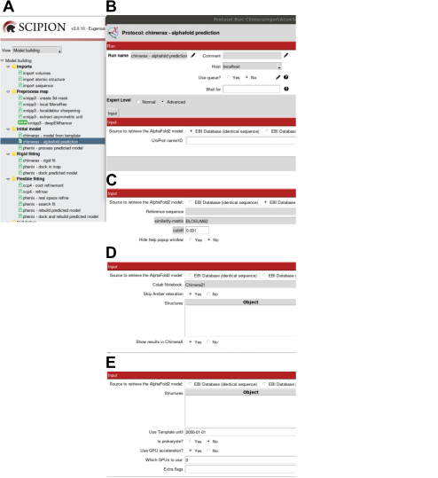

1. AlphaFold2 Initial Model Prediction protocol¶
ChimeraX-based protocol designed to get AlphaFold2 atomic structure predictions [Jumper et al., 2021], [Evans et al., 2021]. Although included in the scipion-em-chimera plugin, the protocol chimerax-alphafold prediction allows to use, in addition to ChimeraX tools, the PHENIX options to access to Google Colab notebook system.
- Requirements to run this protocol and visualize results:
- Scipion plugin: scipion-em
- Scipion plugin: scipion-em-chimera
- Scipion menu: Model building -> Initial model (Fig. 1.1 (A))
Fig. 1.1 Protocol chimerax-alphafold prediction. A: Protocol location in Scipion menu. B: Protocol form to retrieve AlphaFold2 structure predictions from EMDB (identical sequence). C: Protocol form to retrieve AlphaFold2 structure predictions from EMDB (homologous sequence). D: Protocol form to predict atomic structures using Google Colab notebooks to run AlphaFold2. E: Protocol form to predict atomic structures running AlphaFold2 in your own computer.¶
- Protocol form parameters (Fig. 1.1 (B, C, D, E)):Input section:
- Source to retrieve the AlphaFold2 model:Click to select one of the next four options:
- EBI Database (identical sequence): The AlphaFold Protein Structure Database has been developed by DeepMind and EMBL-EBI with the aim of providing researchers with the AlphaFold2 predictions for the human proteome and other key organisms. They plan to extent the database to the majority of catalogued proteins. This work is still in progress and many proteins included as UniProt IDs have already been predicted and those predictions are freely available to the scientific community. To retrieve one of those protein predictions, write the alphanumerical code of the respective UniProt entry (Fig. 1.1 (B):
- UniProt name/IDThe protocol will fail if the written code doesn’t exist in UniProt DB or if despite being a valid UniProt ID, the prediction has not been included in the AlphaFold Protein Structure Database yet.
- EBI Database (homologous sequence): For all those cases in which the AlphaFold2 prediction hasn’t been included in the AlphaFold Protein Structure Database yet, the protocol chimerax-alphafold prediction gives the oportunity of retrieving the prediction performed for the most similar protein, identified through BLAST searching taking advantage of ChimeraX. Selecting this option you’ll be interrogated about (Fig. 1.1 (C):
- Reference sequence: Protein sequence to perform the BLAST searching. This sequence has been previously imported to Scipion by using the protocol Import sequence.
- similarity-matrix: Advanced param to select one of the substitution matrices to assign a score to any couple of residues in the alignment.
- cutoff: Advanced param to select the maximum statistic value required to include a retrieved element in the hit list.
- Hide help popup window: With this param you can choose between hide (YES) or show (NO) a help message to select and save the atomic structure using the ChimeraX command scipionwrite. Selecting YES that help information will be shown also in red bold in the ChimeraX GUI (Log). Take into account that you might not retrieve any homologous structure. Check the box Blast Protein Results on the right. An empty box means no homologous structures retrieved for a particular substitution matrix and cutoff value.
- Google Colab: In case no AlphaFold2 predictions can be retrieved from EBI Database (considering both identical and homologous sequences) the user has the opportunity to generate his/her own structure prediction taking advantage of two different Google Colaboratory notebooks that allows the user to run the program for free in the Google cloud. Look at this video <https://www.youtube.com/watch?v=inN8seMm7UI>’_ for an introduction on Google Colaboratory. There are, nevertheless, some limitations in the computing resources that can be used. In particular, there is a daily limit (about 2 hours), the GPUs assigned by Google Colab might not have enough memory for predicting the structure of long sequences (higher than 800 amino acids approximately) and only one active session will be allowed. Compared with local AlphaFold, there are additional differences concerning the size of sequence databases since Google Colab uses reduced sequence databases and this could generate lower quality predictions. Selecting the option of retrieving structures from Google Colab the user will be interrogated about (:numref:`model_building_app_protocol_alphafold_prediction_1 (D):
- Colab Notebook: Two different notebooks are available in this protocol, designed from ChimeraX and PHENIX:
- Chimera21: With almost no parameters, ChimeraX notebook runs AlphaFold2 with 5 alternative sets of params and retrieves five different models using HMMER for computing sequence alignments and searching in a reduced sequence database constituted by UniRef90, SmallBFD and MGNIFY sequence databases. For more information look at ChimeraX help . Other params appear when the user selects the option Chimera21:
- Skip Amber relaxation: By default this notebook computes the final energy-minimization Amber relaxation step for the most confident prediction (from 5 structures retrieved) using the high-performance toolkit for molecular simulation OpenMM and the Amber forcefield. The option Yes has been selected by default in the protocol to save time and avoid failures due to insufficient computational resources to complete the job. However, to finish with the relaxation step, the user can also select the option No in this case.
- Reference sequences: Since the ChimeraX notebook gives the possibility of retrieving AlphaFold2 predictions from a monomer or a multimer the user should include the sequence of only one protein or several sequences covering all proteins in the multimer, respectively.
- Phenix: PHENIX notebook incorporates a higher number of parameters and the option of including several templates from PDB and a user’s template to improve a previous prediction according to the experimental map restrictions. Despite this advantage, only one model is retrieved running AlphaFold2 with the PHENIX notebook using MMSEQS2 for calculating sequence alignments. Although MMSEQS2 is very precise, it might find less hits compared to HMMER. Additional params of this option:
- Reference sequence: Include here only one sequence since the PHENIX notebook allows to retrieve predictions exclusively for monomers.
- Use this template: Include here the template that you would like to rebuilt an AlphaFold2 prediction. This template would probably corresponds to a previous structure prediction that has been modified according to the experimental map constraints. To encourage AlphaFold to use your rebuilt template select the option
skip_all_msa(click this option at the bottom of the second cell 2. Options). This way your template information and intrinsic structural information will be used. - Use templates from PDB: Maximum number of templates used from PDB.
- Test: This third option is not a Google Colab notebook although it has been included here for debugging.
WARNING:Do not select this option.
- Show results in ChimeraX: By default the ChimeraX GUI window will be opened to show the AlphaFold2 prediction structures. This gives the user the opportunity to modify any of the predictions and save this model using the command scipionwrite. See also the ChimeraX Operate protocol appendix.
- Local AlphaFold: It is possible to run AlphaFold2 locally if you can fit to the requirements of hardware system configuration. In particular, you need a minimum storage capacity of 2.5 TB (recommended 3 TB) since the Alphafold database size is 2.2 TB (uncompressed), and a GPU since otherwise the computation will be very slow. GPU of 24 Gb is recommended to run predictions for sequences between 3,000 and 4,000 amino acids. The protocol has been tested for AlphaFold v2.1.1, able to predict multimers [Evans et al., 2021]. To learn more about software instalation and requirements follow this link. Additional params with this option (Fig. 1.1 (E):
- Reference sequences: Since AlphaFold2 is able to predict the structure of both monomers and multimers, the user should include here the protein sequence(s) contained in the particular complex.
- Use Template until: Option useful to avoid using as template a particular structure present in PDB. Then, the user should select a date before the release date of the structure. The date appears as year-month-day.
- Is prokaryote?: This option particularizes the searching of multimer predictions for prokaryotes. This option was removed in AlphaFold v2.2.0 to pair eukaryotes and prokaryotes in the same way.
- Use GPU acceleration?: Although not mandatory, using a GPU accelerates very much the prediction process. By seleccting Yes an additional param will be shown:
- Which GPUs to use: Write here the GPU you want to use or a list of GPUs available (GPUs separated by commas). Otherwise the job itself will try to allocate available GPU resources.
- Extra flags: Include here additional arguments. Besides those indicated in the protocol help, look at run_alphafold.py to seek the list of flags.
- Protocol execution:Adding specific protocol label is recommended in Run name section, at the form top. To add the label, open the protocol form, press the pencil symbol at the right side of Run name box, complete the label in the new opened window, press OK and, finally, close the protocol. This label will be shown in the output summary content (see below). If you want to run again this protocol, do not forget to set to Restart the Run mode.Press the Execute red button at the form bottom.
- Visualization of protocol results:
- Option EBI Database (identical sequence) (Fig. 1.1 (B): The prediction requested from EBI will be save in the protocol and can be visualized in ChimeraX pressing
Analyze Results. ChimeraX graphics window will be opened. Atomic structures are referred to the origin of coordinates in ChimeraX. To show the relative position of atomic structures, the three coordinate axes are represented; X axis (red), Y axis (yellow), and Z axis (blue) (Fig. 5.3). Coordinate axes, predicted model and Color key of AlphaFold2 confidence scores for individual residues (bfactor (LDDT values) palette of ChimeraX) are model numbers #1, #2 and #3, respectively, in ChimeraX Models panel. - Option EBI Database (homologous sequence) (Fig. 1.1 (C): After pressing the Execute button the ChimeraX GUI window will be opened. In case the user selected protocol options by default a pop up window appears with a help message to suggest the steps to follow to select a particular homologous sequence and save the retrieved structure. Pressing OK this window desappears and Blast results, if any has been found, are shown at the bottom rigth corner of ChimeraX GUI. Click on the selected line hit and the homologous structure will be retrieved to the main ChimeraX window. To save the homologous structure use the ChimeraX command scipionwrite. After exiting ChimeraX GUI, the user can visualize the saved result as it has been indicated in the previous case.
- Option Google Colab (Fig. 1.1 (D): After pressing the Execute button a specific window browser will be opened especific both for Chimera21 (
alphafold21_predict_colab.jpynb) and Phenix (AlphaFold2.jpynb) notebooks. Before starting try to be familiar with some basic functions to run and stop executions (Runtime options). In the case of Phenix notebook, besides the global running, there are several cells that can be executed sucesively and indepently. Options selected in each case should appear in each notebook. In this case (Phenix notebook), if the user selects the option Use this template, (s)he has to run independently each cell and click the option Upload template to effectively upload it (cell number 3). Failures are not uncommon and re-run processes or cells could be a good option if you have enough computational resources. After a while the process finishes and the prediction(s) will be directly in the ChimeraX GUI if the protocol option Show results in ChimeraX was selected. The PAE (predicted alignment error) plot will be opened at the same time. In the main window of ChimeraX the user has the possibility of modifying and saving the structure(s) with the ChimeraX command scipionwrite. After exiting ChimeraX GUI, the user can visualize the saved result as it has been indicated in the previous case. In addition to the ChimeraX viewer window, the PAE plot will be opened, as well as the plot of Number of aligned sequences with no gap for each residue position. - Option Local AlphaFold (Fig. 1.1 (E):
- Summary content:
- Protocol output (below framework):
- Option EBI Database (identical sequence):chimerax - alphafold prediction -> UniProt_ID;
- Option EBI Database (homologous sequence):chimerax - alphafold prediction -> Name of the structure saved by the user with the scipionwrite command;
- Option Google Colab:chimerax - alphafold prediction -> best_model;chimerax - alphafold prediction -> best_model_pae;
AtomStruct (pseudoatoms=True/ False, volume=True/ False).Pseudoatoms is set to True when the structure is made of pseudoatoms instead of atoms.PAE - SUMMARY box:PLDDTs (monomer) or iptm+ptm (multimer)alphafold ranking not yet computed
{kind=link}